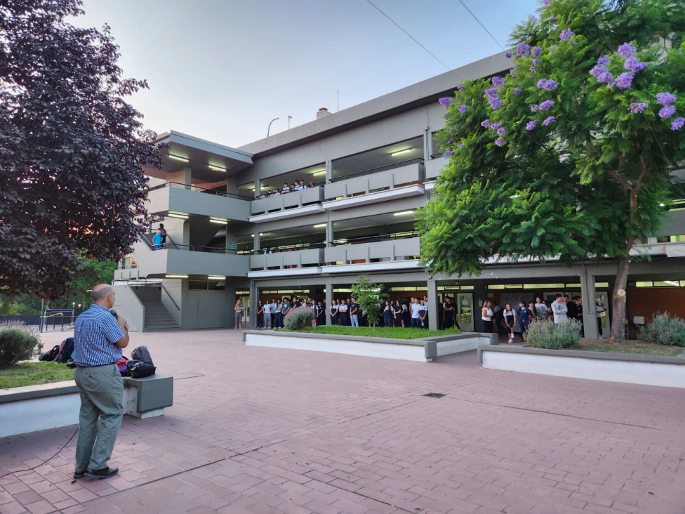

CAPÍTULO 1 DE 4 · MARTÍN ZAPATA
DESDE
1912
Mendoza · Argentina
ESCUELA DE COMERCIO
Martín Zapata
Aprender para participar

Desde 1912, una historia ligada al comercio y a la educación universitaria.
Su origen está vinculado a la formación en comercio y administración.
Conocer su origen →